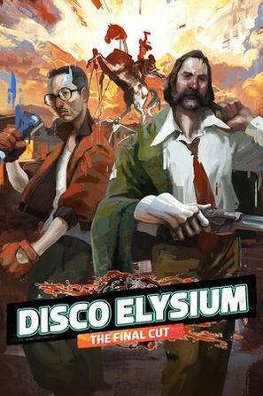

极乐迪斯科 Disco Elysium
diana。（2024, 8，首次开始玩，没想到是文字推起来的瑰宝。）
说过什么
2024-12-13 17:49:35
广播 · 在玩 · ★★★★★
diana。（2024, 8，首次开始玩，没想到是文字推起来的瑰宝。）
2023-08-09 00:37:01
广播 · 想玩
diana。
最后一次看到是 2026-10-07T23:12:31+08:00 · 豆瓣原页

diana。（2024, 8，首次开始玩，没想到是文字推起来的瑰宝。）
广播 · 在玩 · ★★★★★
diana。（2024, 8，首次开始玩，没想到是文字推起来的瑰宝。）
广播 · 想玩
diana。
最后一次看到是 2026-10-07T23:12:31+08:00 · 豆瓣原页